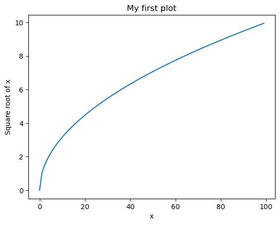
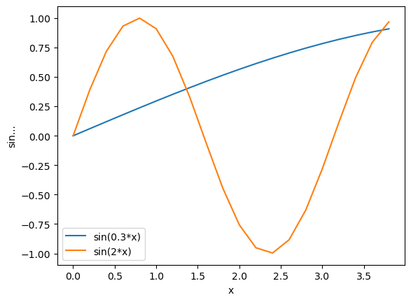
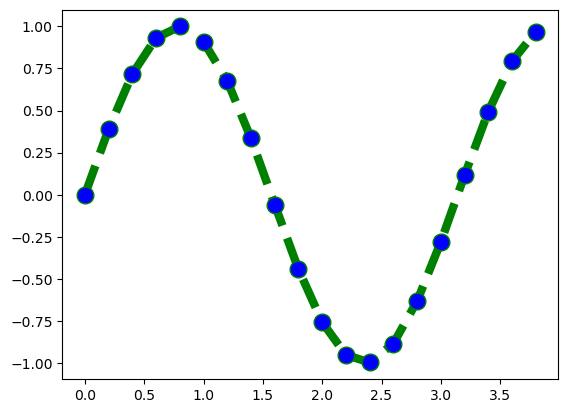
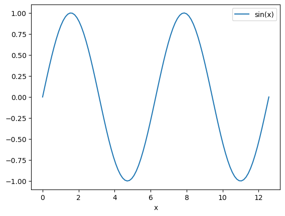

L1 = [1, 2]
print(L1[0])
print(L1[1])
print(type(L1))
# print(L1[2]) # raises IndexError
#print(L1[2])1
2
<class 'list'>Lecturer: Malin Christersson, Robert Klöfkorn
A Python list is an ordered list of objects, enclosed in square brackets.
One accesses elements of a list using zero-based indices inside square brackets.
Note: list is the most commonly used container in Python.
L1 = [1, 2]
print(L1[0])
print(L1[1])
print(type(L1))
# print(L1[2]) # raises IndexError
#print(L1[2])1
2
<class 'list'>L2 = ['a', 1, [3, 4]]
print(L2[0])
print(L2[2])
print(L2[2][0])a
[3, 4]
3L2 = ['a', 1, [3, 4]]
print(L2[-1]) # last element
print(L2[-2]) # second last element
# print(L2[-4])[3, 4]
1--------------------------------------------------------------------------- IndexError Traceback (most recent call last) Cell In[5], line 4 2 print(L2[-1]) # last element 3 print(L2[-2]) # second last element ----> 4 print(L2[-4]) IndexError: list index out of range
rangerange(n)can be used to fill a list with \(n\) elements starting with zero.
L3 = list(range(5)) # numbers 0,1,2,3,4
# L4 = [range(5)]
print(L3)
# print(L4)[0, 1, 2, 3, 4]lenThe function len(L) gives the the length of a list:
L4 = ["Stockholm", "Paris", "Berlin"]
L5 = [[3,4], [10, 100, 1000, 10000]]
print(len(L4))
print(len(L5))
print(len(L5[-1]))
print(L5[-1])
print(len(['a', 'b', 'c', 'd', 'e']))
print(L5[0][0])
# print(len(L5[0][0]))
# a = 5
# len(a)3
2
4
[10, 100, 1000, 10000]
5
3appendUse the method append to append an element at the end of the list.
L6 = ['a', 'b', 'c']
# L6 = []
print(L6[-1])
print(len(L6))
# L7 = ['d'] + L6
print(L7)
L6.append('d')
print(L6[-1])
print(len(L6))c
3
['d', 'a', 'b', 'c']
d
4A convenient way to build up lists is to use the list comprehension construct, possibly with a conditional inside.
The syntax of a list comprehension is
[<expr> for <variable> in <list>]
Example:
L1 = [2, 3, 10, 1, 5]
L2 = [x*2 for x in L1]
# L4 = L1 * 2
# print(L4)
L3 = [x*2 for x in L1 if 4 < x <= 10]
print(L1)
print(L2)
print(L3)[2, 3, 10, 1, 5]
[4, 6, 20, 2, 10]
[20, 10]This is very close to the mathematical notation for sets. Compare:
\[ L_2 = \{2x;\ x\in L_1\} \]
with
L2 = [2*x for x in L1]
Adding two lists concatenates (sammanfogar) them:
L1 = [1, 2]
L2 = [3, 4]
L3 = L1 + L2
print(L3)[1, 2, 3, 4]Logically, multiplying a list with an integer concatenates the list with itself several times: n*L is equivalent to
\(\underbrace{L+L+\cdots+L}_{n \text{ times}}\)
L = [1, 2]
L2 = 3*L
print(L2)[1, 2, 1, 2, 1, 2]Given a list lst:
sum(lst)max(lst)min(lst)L = [4, 9, -1, 2]
print("The sum is", sum(L))
print("The minimum value is", min(L))
print("The maximum value is",max(L))The sum is 14
The minimum value is -1
The maximum value is 9When comparing strings with the > or < operation then first the leading character is compared, which follows the ordering in the UTF-8.
L = ['!adbg', 'Berlin', 'Berl']
print(min(L))
print(max(L))
print(len(L))!adbg
Berlin
3Given a list lst:
lst.reverse()lst.sort()lst.sort(reverse=True|False, key=myFunc)L = [4, 9, -1, 2]
print("L =", L)
L.reverse()
print("L =", L)
L.sort()
print("L =", L)
L.sort(reverse=True)
print("L =", L)L = [4, 9, -1, 2]
L = [2, -1, 9, 4]
L = [-1, 2, 4, 9]
L = [9, 4, 2, -1]How do we calculate
\[ \sum_{i=0}^{n}i\]
using a for loop? using a list? 5min, let’s go!
s = 0
n = 5
for i in range(n+1):
s += i
print(s) 15L1 = list(range(n+1))
print(sum(L1))
L2 = [i for i in range(n+1)]
print(sum(L2))
print(sum(range(n+1)))15
15
15Sometimes it is helpful to enumerate while iterating over elements of a list.
L = ['C', 'l', 'o', 'u', 'd']
#i = 0
#for l in L:
# print(f"The {i}-th element of L is '{l}'")
# i += 1
#for i in range(len(L)):
# print(f"The {i}-th element of L is '{L[i]}'")
for i, l in enumerate(L):
print(f"The {i}-th element of L is '{l}'")The {i}-th element of L is '{l}'
The {i}-th element of L is '{l}'
The {i}-th element of L is '{l}'
The {i}-th element of L is '{l}'
The {i}-th element of L is '{l}'We can access elements of a list by using square brackets.
L = ['C', 'l', 'o', 'u', 'd']
print(L[0])
print(L[-1])C
dIn a similar way we can access sublists.
Slicing a list between index \(i\) and \(j\) is forming a new list by taking elements starting at \(i\) and ending just before \(j\).
L = ['C', 'l', 'o', 'u', 'd']
print(L[1:4])['l', 'o', 'u']Compare with range.
One may omit the first or the last bound of the slicing:
L = ['C', 'l', 'o', 'u', 'd']
print("L[1:] =", L[1:]) # to the end
print("L[:3] =", L[:3]) # from the start
print("L[-2:] =", L[-2:]) # negative index
print("L[:-2] =", L[0:-2])L[1:] = ['l', 'o', 'u', 'd']
L[:3] = ['C', 'l', 'o']
L[-2:] = ['u', 'd']
L[:-2] = ['C', 'l', 'o']The interval \([-\infty, a)\) means: take all numbers strictly lower than \(a\), cf. syntax of L[:j].
L[i:] take all elements except the \(i\) first onesL[:i] take the first \(i\) elementsL[-i:] take the last \(i\) elementsL[:-i] take all elements except the \(i\) last onesFrom a list L, create the red sublists. 5 min, let’s go!

L = list(range(10))
print(L)
# a)
print(L[2:-1])
# b)
print(L[3:])
# c)
print(L[:-2])
# d )
print(L[-3:-1])[0, 1, 2, 3, 4, 5, 6, 7, 8, 9]
[2, 3, 4, 5, 6, 7, 8]
[3, 4, 5, 6, 7, 8, 9]
[0, 1, 2, 3, 4, 5, 6, 7]
[7, 8]A for loop allows to loop through a list using an index variable. This variable takes succesively the values of the elements in the list.
Example:
L = [1, 2, 10]
for s in L:
print(s * 2)
print("Hello", s)
print("Loop finished")2
Hello 1
4
Hello 2
20
Hello 10
Loop finishedOne typical use of the for loop is to repeat a certain task a fixed number of times:
def do_something(i):
print(i)
n = 10
for i in range(n):
do_something(i) # this gets executed n timesThe part to be repeated in the for loop has to be properly indented.
for elt in my_list:
do_something()
something_else()
etc
print("loop finished") # outside of the for loopIn contrast to other programming languages, the indentation in Python is mandatory.
Many other kinds of Python structures also have to be indented and this will be covered when introduced.
for statement ‐ breakbreak gets out of the for loop before all elements of the list are used.
In the following example we possibly don’t use all values of the list x_values.
x_values=[0,2,3,4,5]
threshold=3.5
for x in x_values:
if x > threshold:
break
print(x)0
2
3Not all entries were visited. We say, the list was not exhausted.
for statement ‐ elseelse checks if the loop was not broken by the break keyword.
threshold=6
for x in x_values:
if x > threshold:
break
#else:
# print("all the x are below the threshold")
print(x)
else:
print("all the x are below the threshold") 0
2
3
4
5
all the x are below the thresholdIf we did not break, the else-block is executed.
We must first make the central visualization tool in Python available:
from numpy import *
from matplotlib.pyplot import *Then we generate two lists:
x_list = list(range(100))
y_list = [sqrt(x) for x in x_list]Then making a graph is simple:
# from above
from matplotlib.pyplot import *
from numpy import *
x_list = list(range(100))
y_list = [sqrt(x) for x in x_list]
# plotting commands
plot(x_list, y_list, '-')
title('My first plot')
xlabel('x')
ylabel('Square root of x')
show() # not always needed
plot. It needs a list of \(x\) values and a list of \(y\) values. If a single list, \(y\) is given, the list list(range(len(y))) is assumed as \(x\) values.label to give your curves a name, and then show them using legend.from numpy import *
from matplotlib.pyplot import *
x_vals = [.2*n for n in range(20)]
y1 = [sin(.3*x) for x in x_vals]
y2 = [sin(2*x) for x in x_vals]
plot(x_vals ,y1, label='sin(0.3*x)')
plot(x_vals, y2, label='sin(2*x)')
xlabel('x')
ylabel('sin...')
legend()
show() # not always needed, but does not hurt to put it here
Here is an example with more keywords:
plot(x_vals, y2,
color='green',
linestyle='dashed',
marker='o',
markerfacecolor='blue',
markersize=12,
linewidth=6)
A recursive equation can be written as
\[\begin{cases} a_0 &= c \\ a_{n+1} &= f(a_n), n \ge 0 \end{cases}\]a = c # some initial value c
n = 100 # for some n
for i in range(n):
a = f(a) # where f is some functionA number \(x_0\) such that \(f(x_0)=x_0\) is called a fixed point.
The sequence will converge to that fixed point if \(f\) is a contraction (\(|f(x) - f(y)| < \alpha |x - y| \ \forall x,y\) and \(\alpha \in [0,1)\)) and a self map onto a closed set (see Banach’s fixed point theorem).
An example is visualised using a cob web diagram, see www.geogebra.org/m/za7tarfg. Here you see that a fixed point can be repelling or attracting. If the initial value \(c\) is "close to" an attracting fixed point (\(f\) is a contraction), the sequence will converge to that fixed point.
A Jupyter notebook combines text and code.
You can make notebooks using Anaconda.
For collaborative writing (online) you can use Google colab.
Other options are: - github.com or gitlab.com - dropbox - …
From Anaconda launch Jupyter Notebook (a server is started).
Choose a directory and click on New -> Python 3.
Rename the Notebook at the top. Write some code. Click on shift + enter to execute.

Imports, variables, functions, etc. that you make in cell, are available in succeeding cells (if the cell has been executed)
from numpy import *
from matplotlib.pyplot import *
# use a magic function for rendering matplotlib plots
%matplotlib inline
x = linspace(0, 4*pi, 100)
y = sin(x)plot(x, y, label='sin(x)')
xlabel('x')
legend()
Under the menu Kernel you can Restart & Clear Output or Restart & Run All.
Using the tools in the toolbar, you can move cells up or down.
To delete a cell use the scissors tool.

By default a cell is made for code. To write text, change the cell to Markdown.
The text is formatted using markdown syntax.
The text in a cell is formatted when pressing shift+enter.
# Main heading
## Smaller heading
### Even smaller
**bold text**
*text in italics*An unnumbered list:
- item 1
- item 2
A numbered list:
1. item 1
2. item 2You make an inline formula, like \(f(x) = x^2\), by enclosing LaTeX-code between single dollar signs.
You make a display style formula by enclosing the code between double dollar signs:
\[\int_0^\pi\!\sin(2x)\,dx\]
To make interactive slideshows, you must install RISE (or jupyterlab-rise).
For more information see anaconda.org/conda-forge/rise